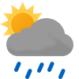

Weather
Germersheim 7.6-18.4
7.6-18.4

7.6-18.4 Mon

8.9-23.6 Tue

9.7-24.4 Wed

15.3-22.7 Thu

14.9-27.5 Fri

17.9-26.5 Sat

13.2-16.3 Sun

13.9-18.7 Mon

13.1-19.9 Tue

14.3-14.3 Wed
Erlabrunn 3.3-11.9
3.3-11.9

3.3-11.9 Mon

5.9-17.3 Tue

9.7-18.1 Wed

12.0-16.6 Thu

8.2-22.3 Fri

14.7-22.3 Sat

10.1-12.8 Sun

9.3-11.6 Mon

10.1-11.7 Tue

10.9-10.9 Wed
Schmilka 5.8-15.3
5.8-15.3

5.8-15.3 Mon

6.5-20.4 Tue

9.8-21.5 Wed

14.8-19.6 Thu

9.6-24.2 Fri

16.3-20.3 Sat

13.8-20.6 Sun

13.3-15.8 Mon

13.5-14.6 Tue

14.1-14.1 Wed